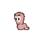
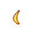
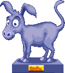
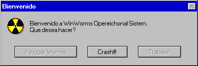

Worms
 De: La Frikipedia, la enciclopedia extremadamente seria.
De: La Frikipedia, la enciclopedia extremadamente seria.
| De la serie personajos de videojuegos:
|
| Worms
|
| 
|
| Se busca uno de estos
|
|
| Creador
|
Team 17
|
| Distribuidor
|
El mismo
|
| Ataque favorito
|
Poseen demasiadas armas como para que ellos prefieran uno mas que otro
|
| Juegos en los que aparece
|
Worms (Obvio xD)
|
| Punto débil
|
El agua o que se les acaben los puntos vitales.
|
| Nacimiento
|
En el año en el que se creó
|
| Muerte
|
Cuando se les acaben los puntos de vida
|
| Heroicidades
|
Divertirnos sin fin matandose entre ellos
|
Los worms son una de las tantas formas de vida extraterrestre creadas por Monesvol con un único fin: matarse mutuamente. Son conocidas en la tierra con el nombre de "gusanos", "Gusanus Asesinus Salvajis", cientificamente. Vivientes desde el inicio de los tiempos, han ido haciendo progresos inimaginables para la gusanidad, de entre los cuales se destaca la creación de armas de destrucción masiva, el viaje por distintos mundos y dimensiones, etc.
Historia
Los worms nacieron por error cuando Dios estaba en plena masturbación creación del hombre. Al parecer, cuando terminó su cometido, los restos de sus acciones habrían tomado una forma semejante a su creador, terminando con la forma de gusanos (¿¿o no se dan cuenta que tienen forma de tallarines??). Al darse cuenta de esto, Él les dijo:
«Y yo, su Dios, les dice que deben destruirse mutuamente, sacrificarse por nada, luchando en diferentes planetas para así ganar un lugar en el Santo Cielo. Pues luchen, hijos, luchen hasta la muerte»
~ Dios, al hablarle a su creación: Los worms
Desde entonces, los worms se pelean mutuamente hasta el final de los tiempos, cuando Monesvol los juzgue por la cantidad de worms que hallan asesinado y los puntos de vida que le queden.
Razón de las peleas a muerte
Hasta ahora, nadie ha podido lograr averiguar la razón por las cuales se pelean, ya que cuando los descubren les llega un solo bazzocazo con el cual quedan hecho mierda muertos, pero esto es lo que se ha logrado reunir hasta ahora. Cabe señalar que Dios dijo que pelearan, dando cualquier motivo para matar, y eso es lo que se busca: Los motivos innecesarios de sus defuciones.
- Por dinero, ya que las armas y los viajes intergalácticos no son gratis ni pa ti ni pa nadie.
- Por las cajas de armas, que son materiales enviados por Dios y caidos del cielo para que cumplan la misión de su padre: Matar.
- Por las cajas de herramientas, que sirven para la otra razón su existencia, además de matar: Sobrevivir a toda costa.
- Por la droga, ¿¿O ustedes creen que se matarían de esa forma estando lúcidos??
- Para encontrar a su lider supremo, el cual se enfrentara a Jack Bauer en un combate arma a arma para ver quien es el rey supremo. Por supuesto, no importa cual sea el rival, en caso de que Jack pierda, El Innombrable lo aniquilará.
- Por diversión, ya que es muy divertido ver a un gusano ahogarse y morir.
- Por que tiene su videojuego, ya que si no fueran un videojuego no existirian.
- Por la última galleta, ¿Quién dice que no les gustan las galletas?
- Por tu amor, sí, ellos te aman.
- Por Honor
Armas
Los worms han creado armas inimaginablemente destructivas y estúpidas, por lo que la lista se haría muy larga. Aquí se mencionan las más usadas y destructivas.
- Bazooka: Es un arma con munición infinita, la más influenciada por
los gases de satanás el viento, el cual cambia la direccion del misil. Muy frecuentemente el disparo te llega a ti, por lo que matas tu último worm en un estúpido intento de matar al enemigo.
- Bomba Banana:Es un plátano creado en los ""Worms Laboratoris S.A." en el cual se lanza esta fruta al aire, causando una explosión muy fuerte, de la cual nacen otros cinco plátanos de menor daño, que mutilan a tu oponente. Se queria usar para matar a King Kong, pero era muy riesgozo, por lo cual se canceló tal operación. Existe la Super Bomba Banana, la cual es mucho más destructiva que la normal.
 Una de las pocas imagenes de una bomba banana en pleno lanzamiento
- La Granada Holy: El arma preferida del Papa. Se compone de un cuerpo redondo con cabeza de cruz lleno del Elixir De La Antivida. Este, al estallar, crea un gran agujero, asesinando a todo worm en un radio de 58,2 l de distancia.
- Burro De Cocreto: Es un equino caido del cielo que cae de forma terrible en parte del escenario, abriendo un gran agujero hasta que cae al agua o se autodestruya en quince segundos de destrucción aterradora. Causa un gran daño a todo gusano que este a su paso, por eso es mejor NO estar a su paso.
 Burro (¿¿ No te lo imaginabas verdad??)
- Armageddon: Es una lluvia de meteoritos que cae sobre el campo de juego, causando gran destrucción a todo lo que está en tierra. La forma menos estúpida de usarlo es fondearte primero, para así evitar el impacto con los meteoritos y sobrevivir. Es quizás el arma más destructiva de toda esta vida.
- Prueba Nuclear India: Es la mezcla entre Chernobyl e Hiroshima, causa un hundimiento del campo de batalla, y que todos los worms queden en estado grave.
- Anciana: Animal parecido a tu abuela. El worm secuestra a tu abuela, le amarra explosivos invisibles a su cintura y la deja partir, corriendo de la forma más ridicula posible por el campo de juego, hasta que el temporizador explota, provocando un gran daño, mientras tu suplicas llorando por piedad hacia tu abuela.
- Escopeta: Una
puta escopeta comun y corriente, no la voy a explicar (parece q los creadores no tuvieron imaginacion y dejaron el arma tal como en la vida real, en lugar de ponerle un nombre más raro).
- Empujón: Así es, un simple golpe con el dedo índice. Te preguntarás: ¿Y
esa puta mariconada eso hace algo? Si el gusano está al borde de un precipicio, sí...
- Oveja: Una oveja que salta hasta que la nitroglicerina que tiene en su interior explota
- Death Note: Se cree que el arma mas poderosa es el Armageddon, pero cada 10000000 partidas cae del cielo en una caja con forma de manzana un cuaderno negro que al usarlo, los gusanos enemigos moriran en 40 segundos,pero para poder usarlo el gusano elegido debe pagar la mitad de su vida.
Juegos de worms
- Worms
- Worms 2
- Worms fiesta
- Worms Fatal Armageddon
- Worms forts un ciego
- Worms Mayhem
- Worms Blast
- Worms 3D
- Worms 4D
- Worms 5D
- Worms 4 mayhem
- Worms 8.3
- Worms 110001001
- W0rmZ l33t h4x0rZ
- Worms gñap ñfis!!
- Worms: End of World
- Worms Degeneration
- Worms of Warcraft
- Worms Estupid War
- Worms: The lost episode
- Worms The Fall
- Star Worms
- Worms Mercenaries
- Worms Crazy Party
- Star Worms El ataque de los clones
- Worms Brutal Fury
- Worms en el infierno
- Worms Aniversary Edition
""Worms Laboratoris S.A."
Hogar de los experimentos más inimaginables del universo. Aqui trabajan los más grandes cerebros gusanodeos de la galaxia, trabajando en conjunto, para poder mejorar la destrucción causada por las armas. Aqui trabajan físicos, biólogos, químicos, matemáticos, astrónomos, etc.
Desde aqui han nacido armas tales como la Bomba Banana, el Armaggedón, el Test Nuclear Indio,etc.
Aqui se creó la única arma que puede destruir a un Jebi: El Flak 88.
Últimamente no avanzan mucho, pues se están matando entre ellos con las propias armas que fabrican... Pero algo es seguro... dominaran el mundo !!
¿Sabías qué...
- ...La "W" de George W. Bush es de Worms?
- ...Hay un rumor en la red que dice que Bill Gates creará el sistema operativo WinWorms?
 Probable bienvenida del WinWorms
- ...Dios y Satanás han jugado en contra en el worms, quedando en un empate al usar el armageddon?
- ...Los Worms también son virus de computadores?
- ...Mario es parte de TEAM17 y es el principal idealista de los Worms?
- ...los worms tienen su propio himno, cargado de armas himnóticas (mensajes subliminales)?
- ...muy pronto saldrá la nueva edición de worms, en la cual el ganador se enfrentara a Chuck Norris?
- ...muchas personas morirán debido a suicidios multiples, ya que no podrán derrotar a Chuck en el juego?
- ...la presidencia de Barack Obama es una farsa, ya que en realidad es un worm el verdadero mandatario?
- ...los worms son los verdaderos hijos del Gran Monstruo Espaghetti volador
- ...si un worm muere, resucitará al apretar "Nueva Partida""?
- ...los worms planean dominar al mundo?
- ...si te comes un worm, recibirás sus armas?
- ...los worms se alianzaron con McDonalds para dominar el mundo
- ...si apuntas a la pantalla, puedes morir de un bazzocazo??
Enlaces
 Biología Biología
|
Rarezas biológicas inclasificables
|
|
|
 Shooter Shooter
 Terror Terror
 Velocidad Velocidad
 Rol Rol
 Estrategia Estrategia
 Aventuras Aventuras
 Fight! Fight!
 Clásicos Clásicos
 Deportivos Deportivos
 Aventura gráfica Aventura gráfica
 Novela visual Novela visual
 Personajes de videojuegos Personajes de videojuegos
|
Autor(es):
- Krusher
- Frikiman
- Aque
- Roms
- Conan
- Narcoloco
- Bahamutzero
- El Rer 3
- Ismael
- MasterVans
Frikipedia 2005-2016, Licencia
GFDL 1.2 - Extraído por FrikiLeaks